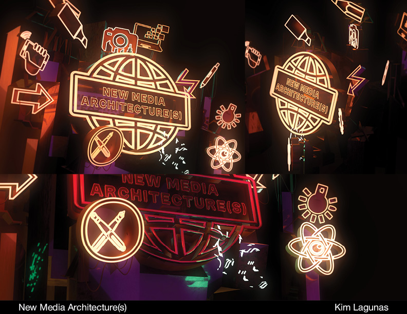
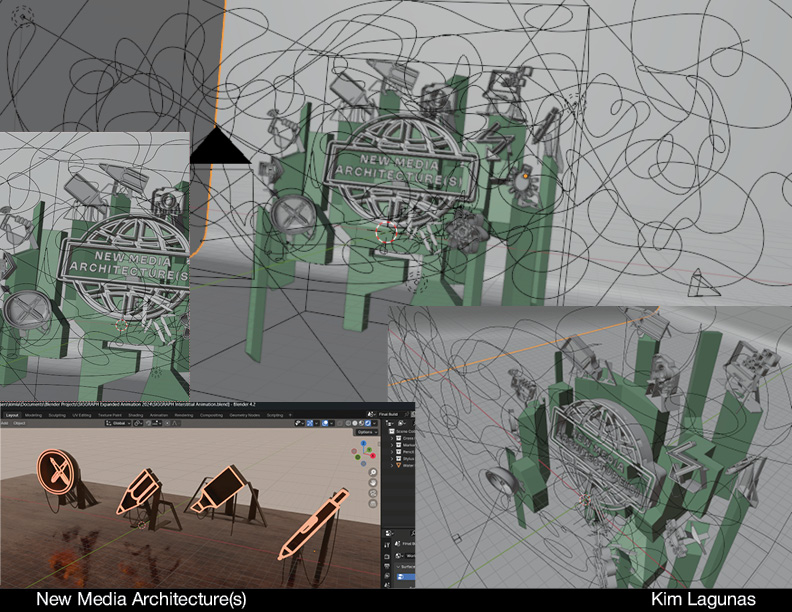

"New Media Architecture(s)" Moving-Image Art Event hosted by ACM SIGGRAPH Digital Arts Committee Public LED video displays in the Denver Theater District, Daniels & Fisher Tower (July 28th, 2024)
I animated the interstitial animation for the event! It marked the beginning of the showcased artists' sequence and played multiple times throughout the four hour event.
Huge thank you to my mentor Johannes DeYoung and the ACM SIGGRAPH Digital Arts Committee for the opportunity!